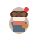

Example 1 — Recording take
recording-probe · Director

spritesheettally-lightclapper-pinWhen capture goes live, the launcher hands off to Director — tally on, clapper pin, recording-specific poses.
REC 00:42
Director · recording